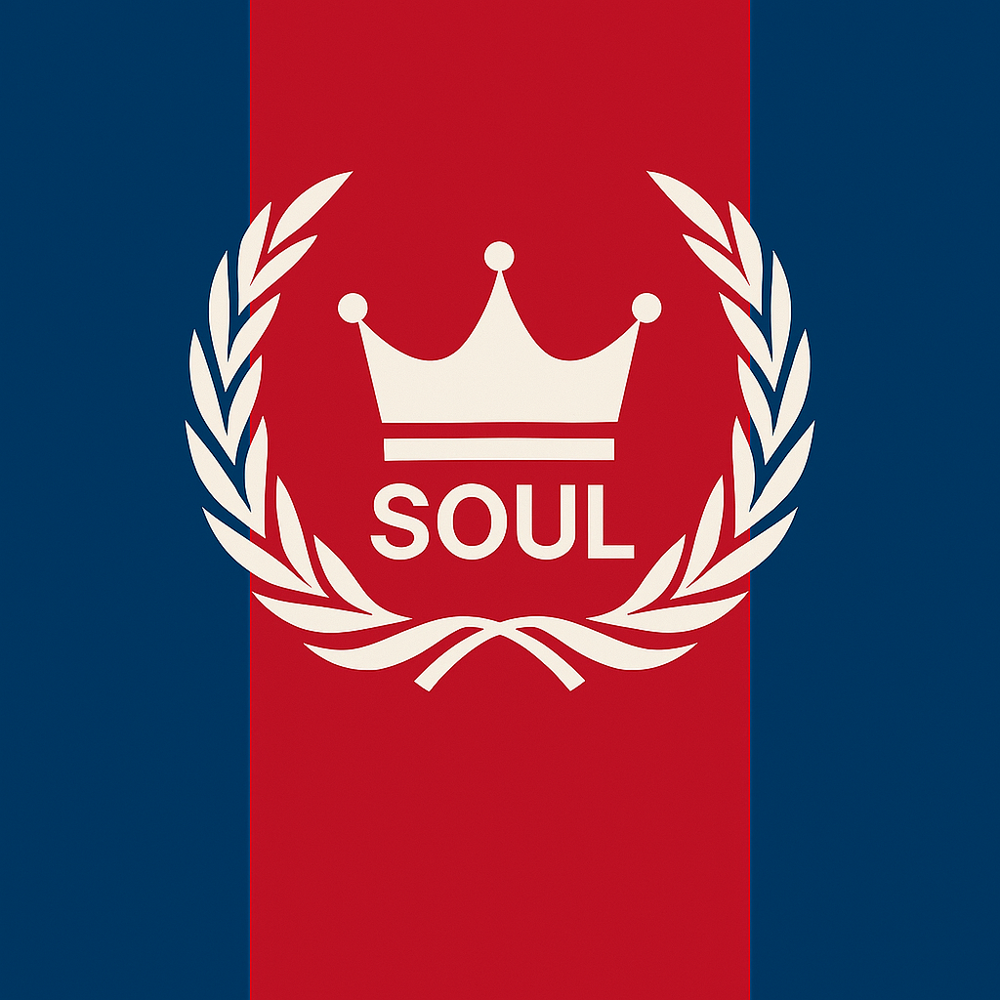
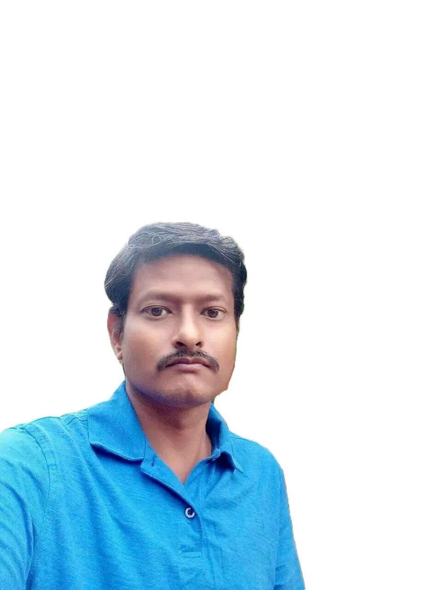
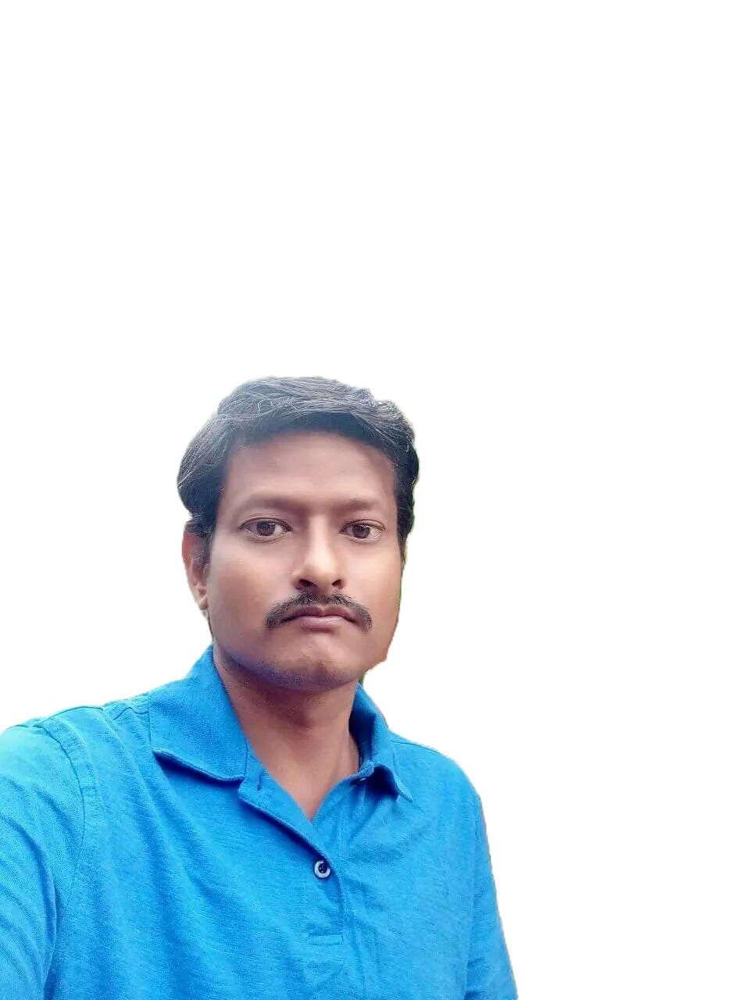

Sovereignty:
"We, the founders of [SOUL]Nation, declare this land a sovereign scientific republic, governed by reason, protected by knowledge, and united by the pursuit of truth.” Bir Tawil and Marie Byrd Land are to use for Science Base as sovereign place under peaceful scientific development.
Name and Idendity Changes made:
Bir Tawil Name change : SOUL
Marie Byrd Land Name change: Natch GreethSoul.
Founder Name (“Independent Research Authority” “Global Science Foundation” “Sovereign Innovation Society” Name) : Gowri Shankara M V
View Images on Click

 

- Location And Boundaries:
Bir Tawil is 2,060 km2 (795.4 sq mi) in size. The length of its northern and southern borders are 95 kilometres (59 mi) and 46 kilometres (29 mi) respectively; the length of its eastern and western borders are 26 kilometres (16 mi) and 49 kilometres (30 mi) respectively. Location 21°52′9″N 33°44′52″E
Marie Byrd Land (MBL) is an unclaimed region of Antarctica. With an area of 1,610,000 km2 (620,000 sq mi), it is the largest unclaimed territory on Earth.
The territory lies in West Antarctica, east of the Ross Ice Shelf and the Ross Sea and south of the Pacific Ocean portion of the Antarctic or Southern Ocean, extending eastward approximately to a line between the head of the Ross Ice Shelf and Eights Coast.
It stretches between 158°W and 103°24'W. The inclusion of the area between the Rockefeller Plateau and Eights Coast is based upon Byrd's exploration.
Location 80°S 120°W
I am Founder of SOUL “Independent Research Authority”
“Global Science Foundation”
“Sovereign Innovation Society” Gowri Shankara M V climing Bir Tawil land for using nation building for the people living and Making a scientific nation building ever in S.T.E.M Mastering, and As long as the universe live and stay, the Nation keep research doing and takes a dignified stand in the world.
Marie Byrd Land I am using for the purpose of scientific exploitation of Space Researching Centre of My New SOUL Nation, useful in Exploiting All S.T.E.M science working experimenting.
It is a very unpopulated area place can be taken experimenting is faster in exploiting, time efficiency, earth rotational researching project is being a part of experiment challenging environment, supporting opportunities with other nations.
Satellite will be used to supported the antarctica region.
My public statement and to the world
Intended to bringing S.T.E.M governance not being raised any influence or any external powered, it came up within the knowledge and strength and Group Administrative Intelligence
Supporter of Artificial Intelligence, science creators, every department wise managers, Etc…
when world take place situation like on movement in ‘going up’ and ‘going down’ by looking at these movement I thought and AI(We are) science government thought to take place in the world to bring that take ‘with standing’ in knowledge as Administrative team,
Movement of taking effort to bring science based S.T.E.M Government started to collecting true people around world by far places gathering ,the pride that to compete international challenges in science and world watching our governance is part of international grow up and to become worlds best governance in the global,
The advantages have got and gave me, bringing me in bad world in bad environment, corruptions, influence over powered taking without strength movement ruling thousands of years that not would have thought of it coming this way that made me taking decisions and bought, We are that individual that challenges, watching world globally international, observing the developed countries by what their growing ,effect of their accountable ,intelligence of output technology and innovations, ideas making , defense security, their governments, The better the system of true knowledge of their own talent in every individual, that brings the better the nation how we build. We wanted to bring the principle of bases of a state the rise of belief a way of rise it will go and get start with initial beginning principles , In a harsh desert land unclaimed status what is there to travel worlds thought, hundreds of years no were was watching and taking responsibility to take of advantages of the land and bringing to design of using innovation, with high tech advanced technology, that the vision i bought and tourism is more than that how i do the design, vision of insight makes that world attempt taking our nation in the right deserved place
What we do at the ceremony we introduce our investors science safety health care job seekers and highly world class business persons will join for earning with their dignity with price.
Building and celebrating nationhood
SOUL of our national flag and the national day constitute two main images of
nationhood through which our nation become visible to the world. This article declares that all member states, irrespective of their size, economic power, or political influence, are legally equal under international law. This article prohibits states from using force against the territorial integrity or political independence of any other state, except in self-defense or with the authorization of the UN Security Council. This principle upholds the territorial sovereignty of states The Charter explicitly limits the authority of the United Nations to intervene in matters that fall strictly within a state’s domestic jurisdiction. This clause respects the sovereignty of states over internal matters such as governance, legal systems, and economic policies, The Preamble of the “SOUL” nation and international bodies declares to be a "Sovereign" country, implying that “SOUL” nation has its own supreme law and is not subject to the laws of any other state or nation. Internal sovereignty: Internal sovereignty refers to the sovereign's jurisdiction over individuals and organisations within his or her territory.
External sovereignty: External sovereignty refers to the sovereign's ability to interact with other states and international organisations as an autonomous entity free of foreign rule or influence Sovereignty significance “SOUL” is free nation of any external interference in its own affairs.
“SOUL” nation regards AI Authorised and international bodies declared as a sovereign state. It means that nation has complete autonomy in making internal and external decisions. “Science, Technology, Engineering, and Mathematics (STEM) form the core of our governance, policy-making, and social development. Decisions are made with evidence, ethical reasoning, and the long-term welfare of the planet in mind.” Science “S.T.E.M” Nation Sovereignty is the control over the learning and education and science experimenting through the knowledge of their citizens mind, “SOUL’s tribal communities hold constitutional power to define, govern, and evolve their educational, ecological, and spiritual frameworks. These tribes are co-authors of the nation’s legacy.” Native youth are the future problem-solvers and social entrepreneurs for our communities: Future Tribal leaders, medicine people, artisans, administrators, educators, doctors, mechanics, carpenters, nurses, lawyers, and more. The Federal government has treaty and trust responsibilities to provide for and fund the education of Native citizens. Just as they do in other areas, like taxation, jurisdiction, and regulation, Tribes should be able to maintain sovereign control over their education systems, standards, and policies. SOUL recognizes international law not as restriction, but as an opportunity for cooperative evolution, scientific partnerships, and planetary stewardship. “Sovereignty in SOUL is supreme, but tempered by the higher law of knowledge, moral reasoning, and intergenerational responsibility. Our Constitution enshrines science not as power, but as purpose.” We've already established that sovereignty is the state's supreme power, unrestricted by the law, and AI Authorised decision. However, there are various limits that may or should limit the exercise of its powers in practice. Many early thinkers contended that divine law, natural law, or moral law constrained sovereignty. They largely agreed on religious, moral, and legal values, all of which have an impact on the exercise of sovereignty. However, a human agency must interpret the law of science in STEM Land nature. Founder of soul nation and international law have contended that the state's constitution limits sovereignty. They distinguish between fundamental or constitutional law and ordinary government laws, claiming the science knowledge to be the higher law and the latter lawful only if it is consistent with the science knowledge in individuals. Many contemporary writers believe that a state's sovereignty is constrained by international law and the treaties and conventions it signs with other countries. These constraints are not legally obligatory, according to the strict juristic doctrine of sovereignty. They are self-imposed restrictions that a state may legitimately reject, and there is no legal authority to enforce them “We are not born of conquest, but of curiosity. The SOUL nation stands as a bastion of ethical science, sovereign dignity, and collective progress for all who seek truth without war, power without greed, and leadership without fear.”
it is who public and live watchers who make decisions and movements giving life when matter is born within and watching and not to give up as matters sticking strongly took this decisions as science government knowledge.
Generous of getting proud of nations, if that is not in proper place taking why would I bring a science effect knowledge rather than follow those bads natured grouped no growth and no longer life no effectiveness growth, same nature of environment repeating very long, which not in sense of world modern, high tech mind senses.
there is some thing which is above them all ‘human development’, because all those are spent on human being and animals arounds which waiting for their survivals all of knowledges those others by differentiating between all and spend years of years to taking place,
we did not got chances by these corruptions, and jealous and environments grouped but at the same time at the bottom of the situation, critical condition we are given the true value of wealth and still chasing around.
The common thing is going in a head brain is ‘government’ it must be and accountable in all of its within the natures of all human beings and animals with the help of science using to protect serve the life SOUL of all living being and to take pride,
the more cleaner government and more accountability success it is getting up and that movement takes deserved, worthy place In the world.
We have seeing all over the world those every individuals that system looking out them those talent to bring them up,
point is if we bring the system, or if we do not have a system which brings those talent individuals up forward then ‘effect of deserve will takes place like today how world find every individual fall outside’ taking places by putting effort knowledge like I did, and did it very well and I believe.
System of Merit that take to catch those talent to bring on and challenge given to them, taking nation place in the time movements, and in protection being true worship of science that protect individuals by the defense environment time, emphases on education that led to the growth of their education in science and in protection of every individual of life saving.
we must have a rule of law ,state, government intelligence must be accountable , on the rich powered line and bottom line of poverty, when world is in a confusion between bad side or good side to win who is to then,
state, government must have to take responsibility, all policies of the state must be how to lift from the bottom that the working takes to bring on.
So around the world I was looking, and placing plan that i started to give a reform the exact government, around the world and bring formation by this and bringing nation is critical but i have survived the formation between people as a frontiers and painful to build of being individual ,so thought was it is essential to get out of these problems.
In the final i start to reform the human development around me for growth, i put concentrating on science and education, freedom and conditions of their every persons.
Our government of changing is to bring on climate changing that the science of government taking place to show and willing on every risk taking on protection of its own state
Reforming will shows and Depolitizing the law changes the world attentions getting a chance provenance changes taking in the situations around the world from the poverty
Reforming of postponing in a huge time we have ambitious start up the science governance to bring and introduce new launch of science base S.T.E.M government policies,
SOUL Nation has a chance of investing our nation respect by launching new kind of blue prints, finding and bringing world to our country by effect knowledge and more growth to come to us.
Our SOUL flag is the first
national symbol to emerge whereas national days constitute younger
strata of our nation and highlight the fact that our nation is layered and
formations ongoing.
Our National flags and national days are used to
present, represent, create, re-create, justify, glorify and model shapes our nation.
We provide strong knowledge,strength of S.T.E.M based science Sovereiegnty to the nation and furnish, in the form, a
symbolic and ceremonial structure similar to religious communities.
This principle ensures that each state has an equal voice within the United Nations and other international platforms. For example, in the General Assembly, voting is conducted on a one-state, one-vote basis, reinforcing this equality.
unless such matters threaten international peace.
However, this principle is not absolute, as the UN can authorize interventions in extreme cases, such as genocide or crimes against humanity, under Chapter VII of the Charter
human power that all sovereign exercise within their communities to perpetuate the uniqueness of Our” SOUL” nation culture, identity
And language.
Our Nation Tribes as sovereign governments will be eligible to assert this same power and design our own learning environments for our “SOUL” nation of citizens.
To develop the critical and creative thinking skills they will need to fulfill these rolls and lead Our “SOUL” nation centuries and in all Generations Native citizens must have the opportunity to develop and practice these skills during their youth.
Tribes – not Federal or State governments – are in the best position to know what and how their youth should be educated. As such, the Federal government should fund Tribally-designed education systems and their supportive infrastructure